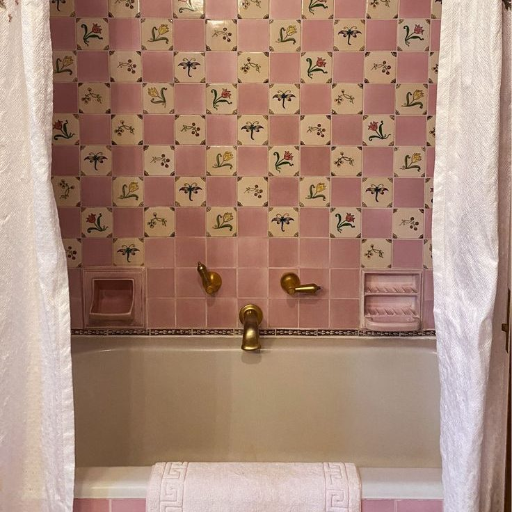

The detail work
- Baseboards and door frames, hand-wiped
- Window sills and tracks
- Light fixtures and fan blades
- Hard-water build-up in kitchen and bathrooms
- Switches and door handles
- Everything on our standard checklist
Everything in a standard clean, plus the detail work that builds up over months. The best place to start before recurring visits.
See your price
Homes that haven't had a professional clean recently start here, so recurring visits can keep it there.
Spring and fall, when dust and grime have had a few months to settle in.
Ahead of holidays, visitors or a family event.
Before photos and showings, while you still live in the home.
| Home | Price |
|---|---|
| Studio, 1 bath | $215 |
| 1 bed, 1 bath | $250 |
| 2 bed, 1 bath | $285 |
| 2 bed, 2 bath | $335 |
| 3 bed, 2 bath | $375 |
| 4 bed, 2.5 bath | $450 |
Add the inside of the fridge, oven or cabinets to any deep clean. See add-ons.

If baseboards, sills and fixtures have collected dust and grime, book a deep clean. If the home is kept up week to week, a standard clean is enough.
Homes that haven't had a professional clean recently start with a deep clean. After that, recurring visits are standard cleans at the lower per-visit price.
Not by default. Add them as add-ons, or book a move-out clean for an empty home, which includes them.